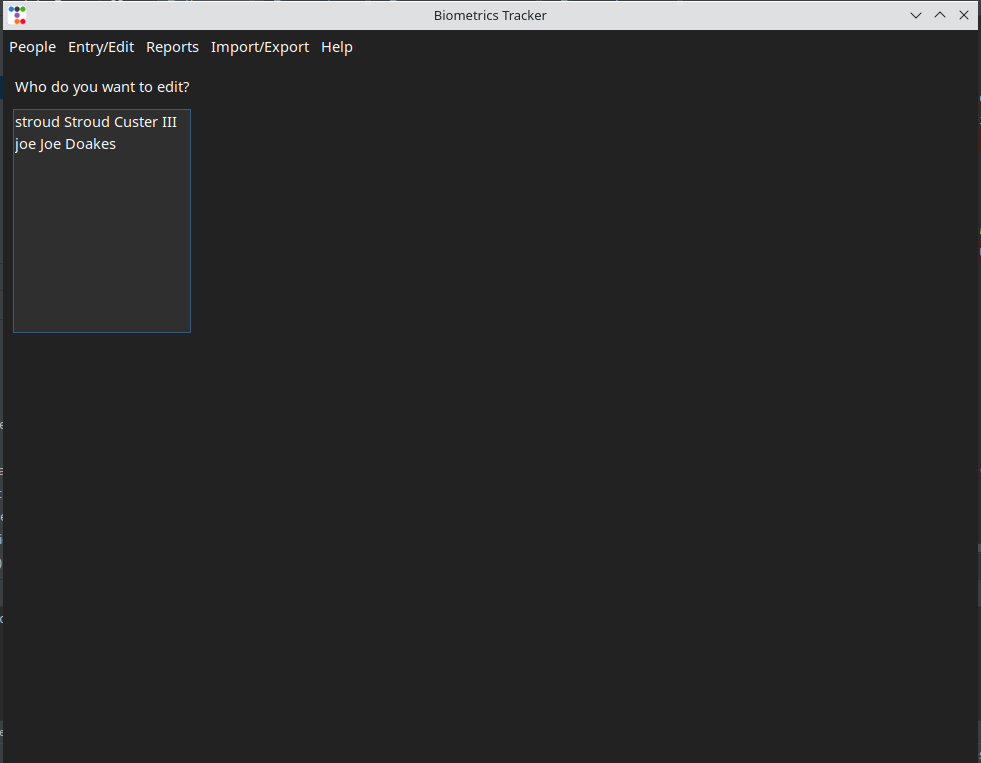
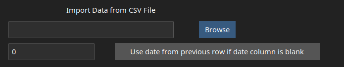
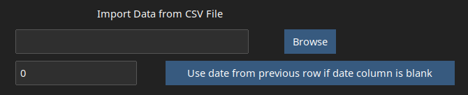
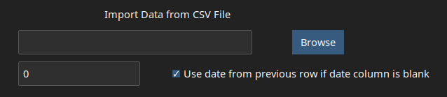
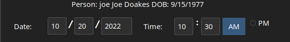
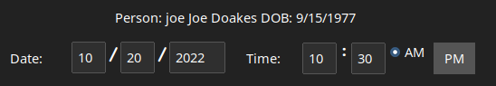

The first time you start the Biometrics Tracker application, you will be presented with the display shown below:
You will be asked to specify the font size you would like to use for the application windows. A smaller font allows the display of more information,
a larger font is easier to read. When you click the ‘Create Config’ button the database file and configuration file will be created. A folder named
"biometrics-tracker" will be created in you home folder. Within this folder, these folders will be created:
data
the SQLite3 database file will be located in this folder
config
configuration information for the Biometrics Tracker application will be located in this folder
logs
log files created by the Biometrics Tracker Schedule function will be located in this folder
The Application Window
After the initial configuration is completed, and subsequent times that you start the application, you will be presented with the display shown below. The top bar
has several drop down menus that are organized in the following fashion.
A GUI element consisting of a square box and a label that allows to select or de-select an option. In some cases, a set of check boxes allow you to
select one or several options from a list
combo box
A GUI element the allows you to select from a list of values via a drop-down list that appears when the combo box is in focus. A value is selected
by clicking on it's entry in the list.
data point
Information related to readings that you enter into the Biometrics Tracker. This consists of the id of the person associated with the data point,
the date, time and value of the reading, and optionally a note that gives context to the reading.
dialog
A pop up GUI that either informs you of some event, or prompts you to enter a piece of information. While the dialog is displayed the main GUI may
be disabled for entry. Dialogs that propmt you for input generally feature a Cancel button and a button to indicate that the entry of the information is
complete.
entry session/event
When the conditions stated in a Schedule are met, and entry session is initiated. A Scheduled Entry GUI will be displayed,
prompting you to enter a metric reading.
field, entry field
GUI elements that allow you to enter numerical or character information.
frequency
The interval a Schedule is based on. Frequency may be Hourly, Daily, Weekly, Monthly or One Time.
GUI
Graphical User Interface - the window based display and entry elements and buttons used in applications.
in focus
An entry field on a GUI is said to be in focus when it is the field that will receive input from the keyboard. As to move through the
entry fields using the Tab and Back Tab keys or click on a field, the field in focus will change.
interval
A numeric property of a schedule that determines whether an entry session will be scheduled every hour, day, (interval=1) or every 2nd (interval=2),
3rd (interval=3) hours, days, etc.
metric
The various types of readings (blood pressure, pulse, etc.) in the application's database.
property
A piece of information related to a person, data point, schedule, etc. For instance, person has ID, name and date of birth properties
radio button
A GUI element the allows you to select a single choice from a list of options. Unlike check buttons, radio buttons are always presented as a group
schedule
A Schedule is a set of conditions associated with a particular person and data point type. When the schedule monitor is running and
the Schedule's conditions are met, and Entry Session is initiated.
UOM
Unit of Measure. For each numerical metric, there are one of more units of measure (e.g. pounds, kilograms, etc.) that may be used in taking the
reading.
Selecting a Person to Work With
If more than one person has been entered, all of the menu options with the exception of Add a New Person will display
a list that of people tracked by the application that allows you to select person whose data you will be working with. To select a person,
double click the list entry displaying their name.

Check Boxes and Radio Buttons
In addition to entry fields that allow you to enter text or numbers, the Biometrics Tracker uses
check boxes and radio buttons. You indicate
your choice by clicking on the box with the left mouse button or by pressing on the space bar when the check box is in focus. Using the space bar allows you to keep your hands on the key board,
which makes for faster an more accurate data entry. The image below shows an unselected check box in focus. The fact that it is unchecked is indicated by the
gray color.

The image below shows a selected check boxin focus. The fact that it is checked is indicated by the blue color.

The image below shows a selected check box out of focus.

A set of radio buttons that allow you to select a single choice from a set of options. A radio button is selected by click is with the left mouse button or pressing
the space bar when the button is in focus. The term 'radio button' refers to the station selection buttons on radios in cars of years gone by; pressing one
button unset all the others. The image below shows a set of radio buttons, the selected button (AM) in focus and the unselected
button out of focus.

The image below shows a selected button (AM) out of focus and an unselected button
in focus. As with the check boxes, blue indicated a selected state, gray
indicates an unselected state.

Combo Boxes
A combo box is another GUI element that prompts you to select from a list of choices. Initially, it looks similar to a regular entry field, except for
a small arrow in the lower right hand corner. See the image on the left below. When you click on the combo box, a pop-down list is displayed. See the
image in the center below. Depending on the number of possible values, not all of the choices are initially displayed. If this is the case, you can scroll though the list of values. To select a
value, click on it. The value will appear in the entry field. See the image on the right below.
When a date or time field is in focus, pressing the up or down arrows will increment or decrement the value.
You can use either the arrows at the bottom right of the main keyboard or the arrow on the numeric pad, if the NumLock key is not in effect. If you are entering
data points that have accumulated over a period of time, this helps to speed the entry process.
Entering Numeric Data
When entering numeric data, be aware that blanks are not taken as a zero value. If you enter blanks to a numeric field, it will be bordered in red as shown below.